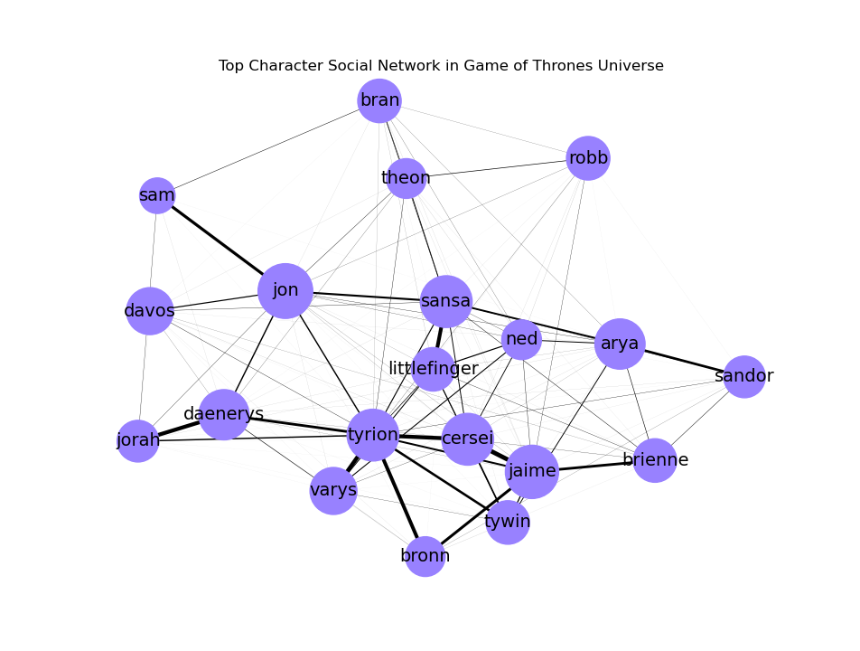

Exploring NLP with Game of Thrones: Social Networks (1/2)
For this project, I wanted to explore the interactions between characters in the Game of Thrones Universe. Over the course of the show, relationships between characters change - friends become foes and aquaintances grow to form alliances. My goal for this project was to pick up on the changes in these relationships by using Social Network Analysis (SNA).
The dataset I used (avaliable here) includes the series scipts broken down into individual sentences along with data such as the name of the person speaking, the episode and season from which the sentence was said, and more. For social networks, we aren't actually concerned with the specfics of what's said. Thus, the typical text cleaning won't be necessary. Most of the hard work will actually come from determining our "edge weights" which are the number of interactions between characters. For this, I kept it simple by combining one-way interactions. That it, it doesn't matter whether Jon talked to Sansa or Sansa talked to Jon - I want them all to count as interactions between Jon and Sansa.
Originally, this code was written for a project in my natural language procesing class taken Fall 2019. The entirety of this code is avaliable here. Rather than go into the details of project, I want to write this article to explain how you can do a similar study for yourself! However, before you do try implimenting this code, you might want to learn a little bit about
To start, let's make note of the libraries were used:
The heavy lifter in this code is NetworkX. NetworkX is a Python package for exploring and graphing social networks. To aid with studying the dynamics of a network, this library has incorporated the utilities to report the basic information of your structure - that is node information like centrality, eccentricity, and degree. I recommend checking out NetworkX's docs for a complete tutorial!
Our first portion of the code simply reads in our data, finds the top characters, and sets the graph we'll add our information to.
The next portion of the code calculates the edge weights for each character. In order to determine interactions between characters I had to make a big assumption - whichever character is speaking is directing their statement to the character who spoke immediately prior. While this definitely leaves room for error, this is a common assumption in academic literature so I let it slide.
For this code, we first develop a nested dictionary where our first key is the character speaking and the second is the character being spoken to. Finally, our value is the total number of interactions. You might notice this technically only calculates one way interactions. To fix this, our final loop combines those values.
Finally, we can plot our social network.
This first portion of the code allows our node size to change depending on the "degree" - that is the total number of edges connected to a particular vertex. For only 20 characters, this doesn't make a huge impact - try messing around with this code at higher numbers to see it's real value! After this, we plot our edges according to their "weight" - that is how many interactions the character had with another chracter.
The following plot is our output. I kept it pretty simple, but to explore this further check out NetworkX "Drawing" doc here. For my actual project involving social networks, I specifically looked at these graphs for certain portions of the show (e.g. Seasons 1-4, Seasons 5-8) to visualize how relationships changed over time. Try doing something like this for yourself by changing the first code chunk just a tad!
Lastly, I included and output file with various SNA metrics related in order to who is truly the main character.
Next time, I'll go more into these metrics and how to use them to analyze the change in social dynamics over the course of the show.